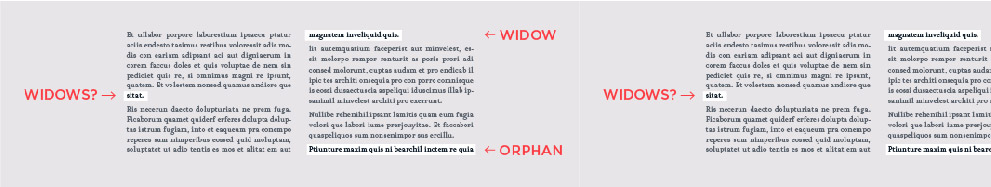

Widow and Orphan Control
.
Picture a paragraph that starts at the bottom of one page and continues at the top of the next. When only the last line of the paragraph appears at the top of the second page, that line is called a widow. When only the first line of the paragraph appears at the bottom of the first page, that line is called an orphan.
.
Widow and orphan control prevents both. Orphans are moved to the next page with the rest of the paragraph. To cure widows, lines are moved from the bottom of one page to the top of the next. Thus, widow control will frequently produce extra blank lines at the bottom of your pages.
.
Do you need widow and orphan control? Try it. See how it looks. In my own work, I approach widow and orphan control the same way I approach ligatures—I only use it if widows and orphans are causing a visible problem. Otherwise, I find that the blank lines at the bottom of the page are more annoying than the widows and orphans.